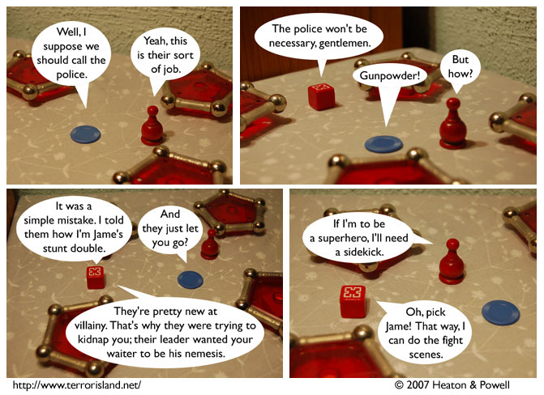

Strip #91
— Wednesday, January 10, 2007
Waiterman can’t pick Gunpowder to be
his sidekick, since Gunpowder doesn’t have a stunt double.
Notes, Thoughts, &c.
Ben’s Notes
I went to the Cartoon Art Museum today, because they have a great exhibit on cartoons that have been rejected by the New Yorker. I’m hoping to learn how we can get Terror Island to that point.
Lewis’s Notes
I remembered today how awesome Aristotle is. Not that I ever really forgot.
Note: That’s actually my boilerplate text for comments, I didn’t have anything in particular to add today.